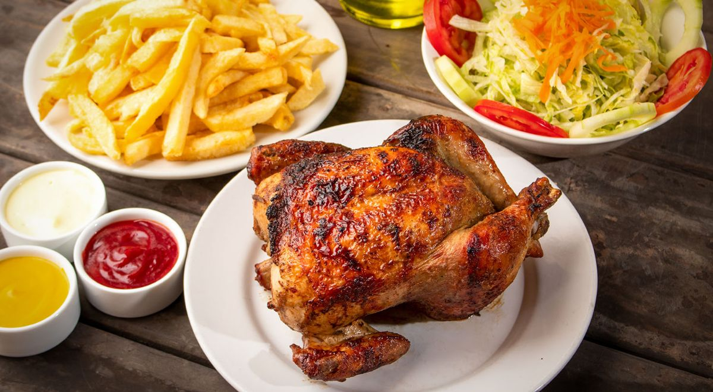

Hola mi nombre compelto es Jhonatan Magdiel Copa Huayta, estudio Informatica en la Universidad mayor de San Andres, conocida mas por la UMSA,tengoalgunos pasatiempos y gustos de lso cuales resaltan mi gusto por los platillos como El arroz Chaufa y el Pollo a las brasas. Tambien los Videojuegos tales como Albion Online el cual es un MMORPG no lineal sandbox. Una de mis series favoritas es Juego de Tronos, tambien la serie Breaking Bad, ambas fueron espectaculares, tambien estoy interesado en la lectura de historias de fantasia, el que me marco fue la novela escrita por Rifujin na Magonote llamada Mushoku Tensei una historia genial. Me gusta tocar la guitarra, el ukelele y el clarinete, Me encanta jugar Basquet aunque estoy lesionado pero pronto volvere al camino. Me encanta mi carrera aunque tenga un monton de contratiempos no quiero dejarla